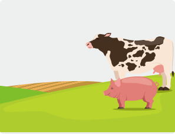
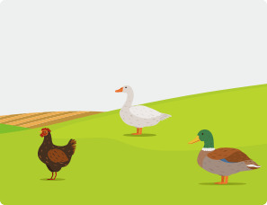
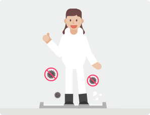
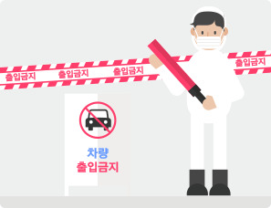

가축질병
가축질병을 사전에 충분히 습득해서 재난이 발생하였을 때 피해를 최소화할 수 있도록 대비하시기 바랍니다.
구제역 발생시 증상은?

- 소
- 감염 후 24시간 이내에 침을 심하게 흘리고, 혀·잇몸·발굽·유두 등에서 수포(물집)가 생기며,
수포가 파열되면 피부가 드러나고 궤양으로 발전되기도 합니다.
- 폐사율은 낮으나, 1주 이상 거의 먹지 못하며, 절룩거리며, 유방염이 발생되고,
산유량이 50%이상 격감 등의 경제적 피해를 입힙니다.
- 돼지
- 감염 후 제대로 서거나 걷지 못하는 증상이 관찰되며, 발굽의 수포가 파열되어
피부가 벗겨진 자리에 세균에 의한 2차 감염이 일어나면 발톱이 탈락되기도 합니다.
- 새끼 돼지는 50% 정도 폐사하며, 때로는 어미 돼지가 죽기도 합니다.
고병원성 조류인플루엔자(AI) 발생시 증상은?



- 닭
- 감염 후 사료섭취량 저하, 침울, 졸음 증상을 보인 후, 약 4～5일 후 50%의 폐사율을 보이며,
이후 거의 100% 폐사
- 벼슬·다리에 청색증을 보이며, 안면이 붇고, 호흡기 증상이 동반됨. 흰색 또는 녹색의
심한 설사 등 소화기 증상도 관찰됨.
- 오리
- 감염 후 사료섭취량이 줄고 호흡기 증상이 있으나, 점진적으로 회복.
- 산란용 오리는 급격한 산란율 저하가 보통 일주일 정도 지속되다가 회복하며,
육용오리는 사료섭취량이 갑자기 감소되고 10% 내외의 폐사율을 보임.
- 가축질병 발생 방지를 위한 농장별 조치사항은?
- 축사와 그 주변을 청결히 하고 주기적으로 소독하세요.
- 운반차량(가축·사료·약품·분뇨·기계류) 및 사람 등은 가급적 농장 출입을 자제토록 합니다.
- 농장 및 축사 출입시에는 반드시 차량 소독을 실시하고, 사람은 신발을 소독한 후 출입하도록 합니다.
- 출입한 차량에 대한 기록을 철저히 합니다.
- 구제역, 고병원성 AI 발생국에 대한 해외여행을 삼가시고, 부득이 여행을 하여야 하는 경우에는
귀국 시 공항에 상주하는 검역기관에 신고하여 소독조치를 받으시고,
입국 후 5일 이내 축산시설 출입을 자제합니다.
- 구제역 및 고병원성 AI 발생이 의심되는 경우에는?
- 축사와 그 주변을 청결히 하고 주기적으로 소독하세요.
- 갑자기 가축 폐사가 일어나거나 늘어나는 경우, 가까운 가축방역기관 또는 시·군·구(읍·면·동)
에 즉시 신고하며, 죽은 가축은 가축방역관의 지시가 있을 때까지 이동시키지 마세요.
- 가축방역관(시·도, 시·군·구, 가축방역기관) 또는 가축방역사(가축위생방역지원본부)의
사람·차량·가축 등에 대한 소독 등 초기 방역조치, 검사시료 채취 및 역학조사 실시에 협조합시다.
- 정밀검사 결과가 최종 “음성”으로 판정될 때까지 사람(축주·관리자·가족), 가축·분뇨·장비·물품
등에 대한 이동제한 및 차단방역 조치에 협조합시다.
- 그 외 가축방역관 등의 방역활동에 협조해 주세요.
- 구제역 및 고병원성 AI 발생이 확인된 경우에는?
- 발생농장에 대한 방역조치(소독, 살처분 등)에 적극 협조합시다.
- 현장 파견 가축방역관 등의 사람·차량·가축 등의 소독 등 차단방역 조치, 검사시료 채취 및
역학조사 실시에 적극 협조합시다.
- 발생농장을 중심으로 설정한 방역지역(오염·위험·경계지역) 및 이동통제초소 등에 대한
방역조치에 적극 협조합시다.
- 만일, 관내 모든 축산농장·작업장 등에 가축·사람·차량의 출입을 일시 금지하는
조치(Standstill)를 시행하는 “이동제한 명령”공고하는 경우에는 적극 협조합시다.
- 방역지역(경계지역 내) 등에 대한 가축의 이상여부 확인을 위한 예찰전화 및 문의에 협조합시다.
Q & A
 Q. 구제역 및 고병원성 AI 의심이 가는 경우에는 ?
Q. 구제역 및 고병원성 AI 의심이 가는 경우에는 ?- A. 임상증상이 나타나는 의사환축이 발생하면 즉시 각 시·도(시·군, 가축방역기관 : 1588-4060) 또는 농림축산검역본부(1588-9060)에 신고하세요.
최대한 빠른 시간내에 정밀진단이 이루어져야 하고, 즉각적인 방역대책이 실시되어 축산농가 및 축산업 등 국내산업의 피해를 최소화하여야 합니다.
 교통사고
교통사고
 화재사고
화재사고
 어린이
어린이 수난사고
수난사고
 가축질병
가축질병
 댐 붕괴
댐 붕괴
 감염병 예방
감염병 예방